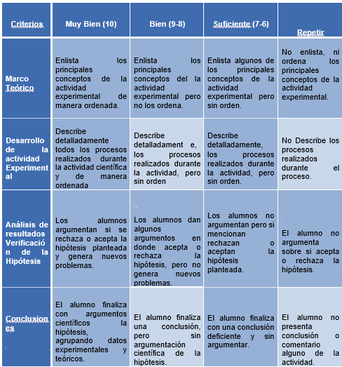

¿POR QUÉ PASA?... (La explicación científica escolar)
¡LLEGÓ EL MOMENTO DE ELABORAR EL INFORME (REPORTE)
ESCRITO DE LA ACTIVIDAD EXPERIMENTAL! (del punto a 1 al 12)
- Con los puntos desarrollados hasta ahora y los siguientes apartados, vas a poder elaborar el informe escrito. No olvides incluir las imágenes que recabaste con tu dispositivo móvil.
6. ANÁLISIS, CONTRASTACIÓN, EXPLICACIÓN E INTERPRETACION DE OBSERVACIONES, RESULTADOS Y/O EVIDENCIAS EXPERIMENTALES
- Analiza los resultados obtenidos y compáralos con tus hipótesis iniciales.
- Identifica los factores que pudieron influir en las diferencias observadas (tiempo de extracción, temperatura, tipo de planta o solvente).
- Argumenta tus resultados con base en el método científico.
- Determina si se aceptan o rechazan tus hipótesis y justifica la respuesta.
7. ELABORACIÓN DE CONCLUSIONES
- Redacta tus conclusiones integrando la pregunta problema, las hipótesis y los resultados experimentales.
- Sustenta tus ideas con lenguaje científico y claridad argumentativa.
- Reflexiona sobre la relación entre ciencia, naturaleza y sustentabilidad.
8. ¿QUÉ APRENDÍ?
Expresa de forma personal:
- Los conocimientos adquiridos, como técnicas de extracción, saponificación o análisis experimental.
- Las habilidades desarrolladas, como el trabajo en equipo, el uso de instrumentos y el registro científico.
- Las actitudes logradas, como la responsabilidad ambiental, la conciencia del uso racional de los recursos naturales y la valoración del conocimiento tradicional.

9. REFERENCIAS CONSULTADAS. (BIBLIOGRÁFICAS, HEMEROGRÁFICAS O CIBERGRÁFICAS
- Para reportar la bibliografía consultada debes utilizar el formato APA para citar las referencias consultadas en la elaboración del reporte de la actividad experimental.
· Almeda, L. (2006). Liquid chromatographic-mas spectrometric analysis of phenolics and free radical scavenging activity of rosemary extract from different raw material. Journal of Chromatography, 1120(2): 221-229.
· Arévalo, Y. (2009). Evalación in vitro de la actividad de aceites esenciales de plantas colombianas sobre Leismania braziliensis. Revista Colombianan de Ciencias Químico Farmacéuticas, 38(2): 131-141
· Barni, M. V. (2009). Estudio de la eficacia antibiótica de un extracto etanólico de Rosmarinus officinalis L., contra Sttaphylococcus aures en dos modelos de infección en piel de ratón. Boletín Latinoamericano y del Caribe de plantas medicinales y aromáticas, Sociedad Latinoamericana de Fotoquímica. 8(3): 219-233.
· Montes de Oca, R.G. (2010). Elaboración y control de comprimidos fitofarmacéuticos de ajenjo (Artemisia absinthuim L), romero (Rosmarinus officinalis L.) y manzanilla (Matricaria chamomilla L.) para combatir la menstruación dolorosa. Tesis de Licenciatura. Escuela Superior Politécnica de Chimborazo, Ecuador.
· Musa O. And Chalchat 2008. Chemical composition and antifugal activity of rosemary. International Journal of Food Science and Nutrition, 59 (7): 691-698.
· Ruí, O. M. (2000). Tratado de Botánica, 3ª. Edi., Porrua, México D. F. 1256 pp.
· Tschinggerl, C. (2020) Investigation of the volatile faction of rosemary infusion extracts. Scientia Pharmaceutica, 1 (4): 483-492.